再谈泡泡玛特¶
在《2025 的泡泡玛特与 2021 的 NFT》中已经给泡泡玛特本轮周期的主力产品 Labubu 进行过定性，属于潮流玩具炒作，与潮流服饰和潮流虚拟产品炒作属于同一类。本文主要分析 Labubu 的炒作过程、历史上其他潮玩的炒作与现状，还有这类炒作所折射出的商业逻辑。
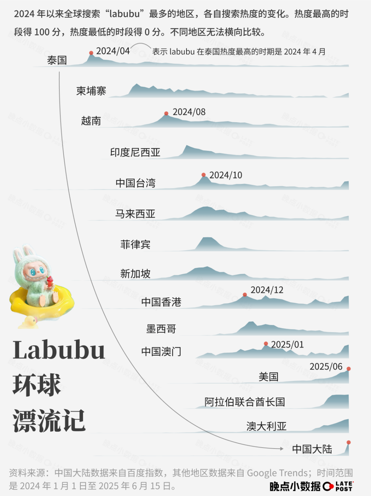
从以上节选自晚点LatePost文章中的图片可以看出，Labubu 的炒作始于中国大陆境外，然后逐步传到至境内。Labubu 的平均价格和泡泡玛特股价也随着炒作的传到而来到高位，从上图中可以看出，在境外的炒作基本上都只能维持一段时间的热度，并不会像传统奢侈品牌一样形成持续的影响力，那么境外的炒作极大可能就是给境内的炒作进行铺垫，目标就是在价格高位将产品和股票卖给境内消费者和个人投资者。以下图片同样节选自晚点LatePost的文章，存在明显的“马后炮”逻辑，这也是媒体为了博取流量的常见操作。
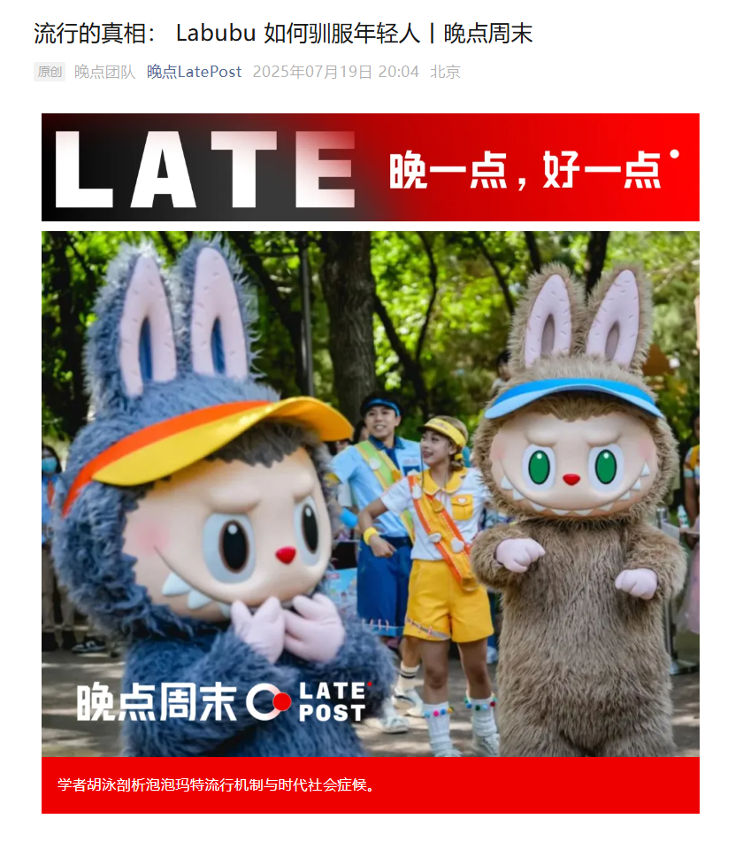
以下内容节选自《新男人装》公众号，描述了历史上其他潮玩的炒作与现状。
回溯潮玩前代顶流，昔日的“Labubu们”今何在
潮玩圈炒家可能是全世界最记吃不记打的一帮人。当各路人马为Labubu押上真金白银时，俨然忘了曾经的积木熊、KAWS和蒙奇奇。从腾空而起风光无限，到一泻千里作鸟兽散，这个过程一遍遍重演，快到参与者根本来不及复盘。这次我们就来回溯一下那些光速陨落的前代顶流们，看看它们现如今正在摆地摊还是干直播。
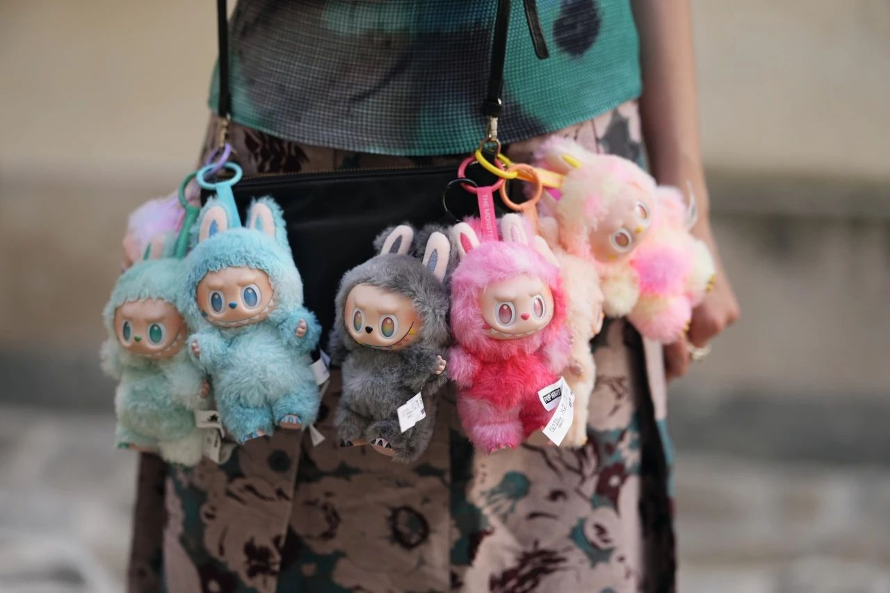
Molly——Labubu黄金模版
当年有多火
泡泡玛特主推IP、可爱百变画风、盲盒+限量双重稀缺Buff……毫不夸张地说，Labubu的进化路线都是Molly玩剩下的。主品牌凭借这个小人偶在资本市场一路狂飙，惹得黄牛在线下店门口大打出手。它既是流量密码也是变种货币，二手市场的限量款轻松炒出五位数的价格。年轻人租着一月八百五的单间，给Molly全系列整上了“娃柜博物馆”。发工资后的第一个奖励，就是去自动贩售机上试试手气。
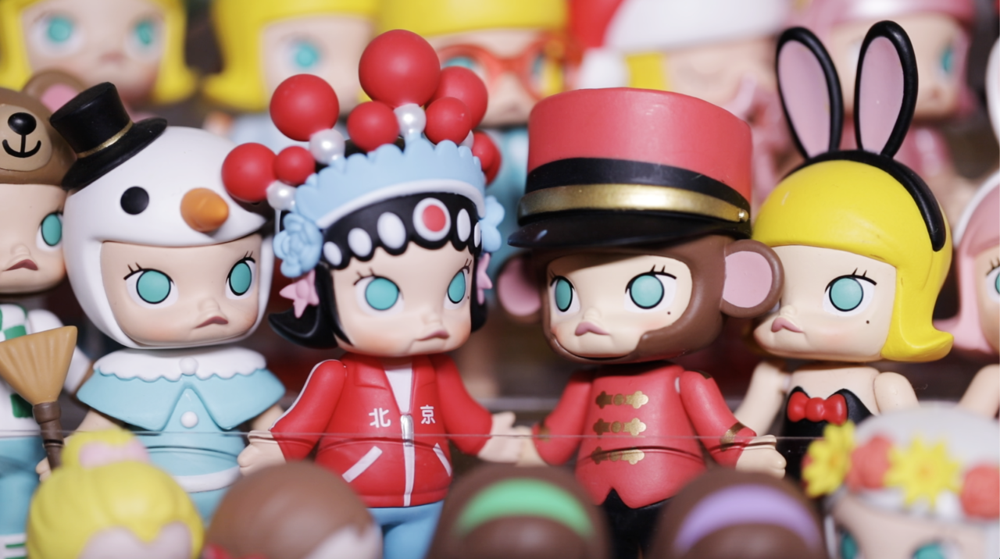
如今有多凉
人不如旧，娃不如新。嘟嘴小翘鼻的风头，完全被Labubu、Dimoo瓜分殆尽。无论是泡泡玛特门店还是二手平台，Molly都开始吃灰了。一代顶流沦为时代眼泪，也亲眼见证了潮玩圈的“城头变幻大王旗”。除了审美更迭之外，Molly的落魄也离不开自己的娃海战术。官方在她最火时疯狂推新，有博主盘点过，Molly至少已经推出了47个不同系列。大伙儿赚的还没你掏的快，你叫我们怎么玩？
Jellycat——成年人的精神奶嘴
当年有多火
Jellycat的创作者绝对是天才。它摘掉了毛绒玩具廉价、仿生的老路，转而靠治愈系和设计感出圈，一度被称为“毛绒玩具爱马仕”。害羞邦尼兔曾在英国获评“年度最佳儿童产品”，而后又果断杀入全年龄段赛道，成了很多人送情侣、送挚友的热门选项。2023年双十一甚至力压“当红炸子鸡”玲娜贝尔，成了天猫最畅销毛绒玩具。巅峰时期还和华尔道夫酒店合作了联名下午茶，点心随口一塞，邦尼兔必须咔咔九连拍。
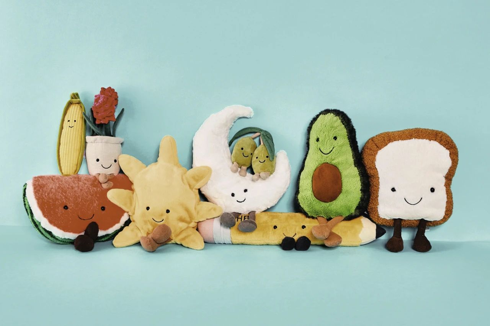
如今有多凉
娃圈奢品并没有完全凉透，但新品销量已经明显下滑，甚至不再需要抢购了。许多热销款也在高频回归二次发售，二道贩子万万没想到还能被官方砸盘。如今消费降级成了大趋势，定价高达1999元的邦尼兔实在是让人爱不动。哪怕钱包扛不住了，Jellycat可不管你这个那个。看见官网上7999元的限量版奥德儿章鱼玩偶，那压迫感堪比看到了北海巨妖。许多人开始转战莆田货，想要同时留住快乐和钞票，也只能这样了。
Kwas——潮圈交际花
当年有多火
骷髅头、X状眼、大象耳……Kwas长相很怪，而它的爆火经历更怪。一幅丙烯画曾在苏富比上拍出人民币过亿的天价，各种巨型雕塑也是行走的暴风眼。无论摆到哪儿，都是自带聚光体质的顶流打卡点。每一发售时都会被抢购一空，然后身价暴涨数倍后出现在二手市场里。太阳花、积木熊、芝麻街……和它联名过的潮玩IP数不胜数。而那些把Kwas拴在身上的各路明星们，也就成了它的纯天然广告牌。
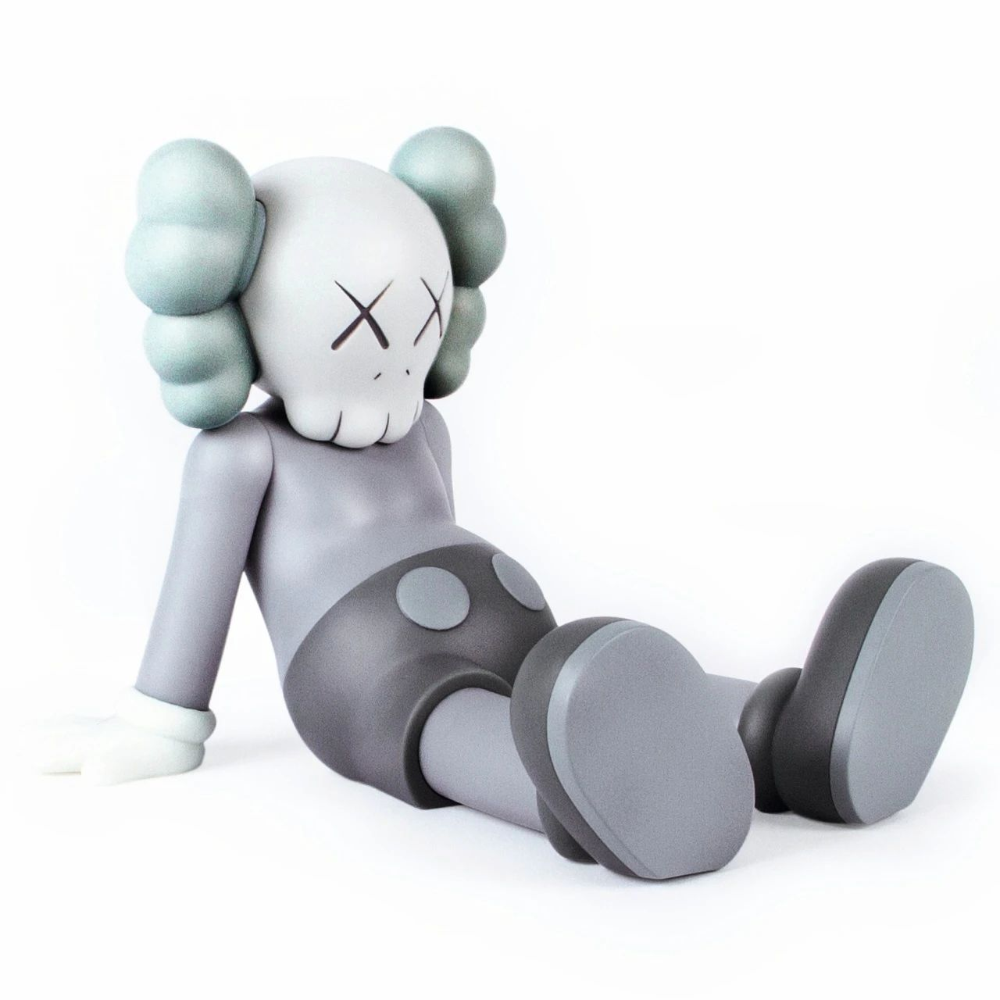
如今有多凉
Kwas的价格并没有明显崩盘，甚至一些爆红款式依旧能复刻当年神勇。譬如灵感源自米其林的限量版CHUM公仔组合，一开盘就被炒到了2万每套。但是随着联名逐渐公式化、无差别化，Kwas的新奇感也被一再削减。随着山寨货持续发力，大部分人已经完全不参与这场击鼓传花游戏了——开业时在门口摆一个Kwas全尺寸立像，无论真假，大家都会认为是义乌货。到了这一步，退场也只是时间问题。
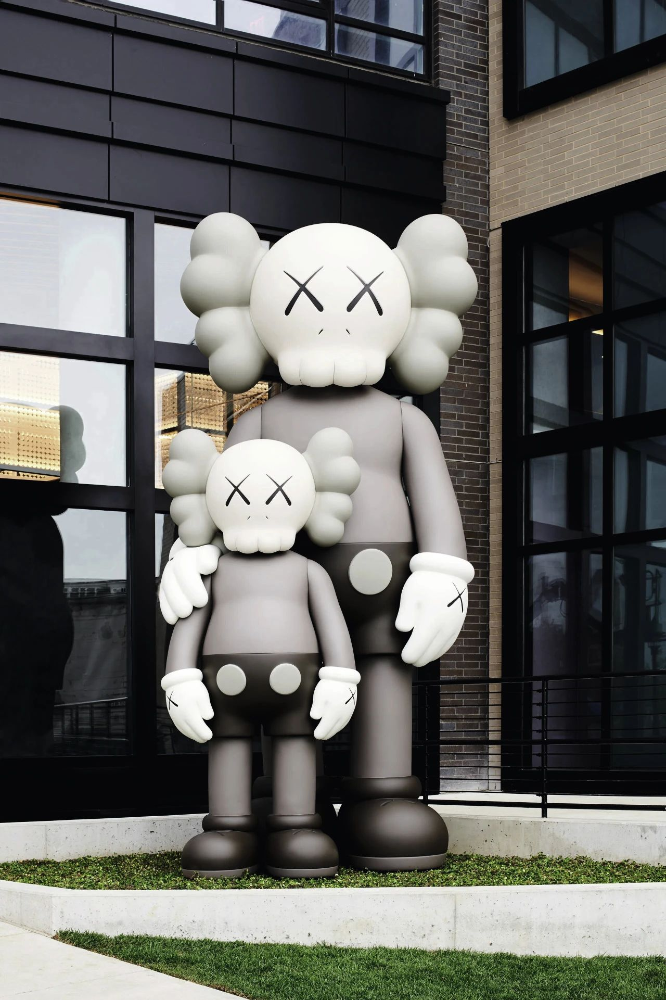
蒙奇奇——丑萌赛道的教科书
当年有多火
很多人入手蒙奇奇都是因为听过这么一句暴论：“每个女孩子，都应该有她自己的蒙奇奇”。日本甚至萌生出了一个和它有关的都市传说——给女孩送一个蒙奇奇，你们就能走进“爱情的坟墓”，带点儿勾魂马面的意思。但平心而论，蒙奇奇的颜值并不高。豆豆眼、塌鼻梁，从不修理且能羡煞程序员的蓬勃毛发，就像两只未经世事的小毛猴子。所以人们见了它就会迸发出强烈的保护欲，一不留神就把周边全抱回家了。
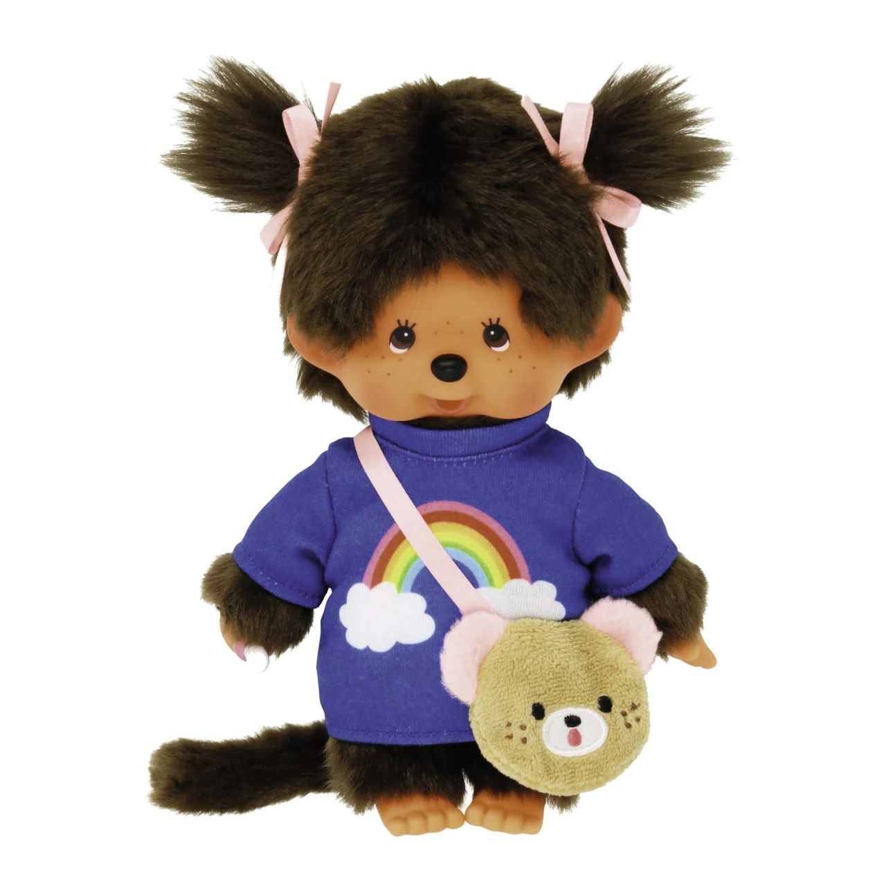
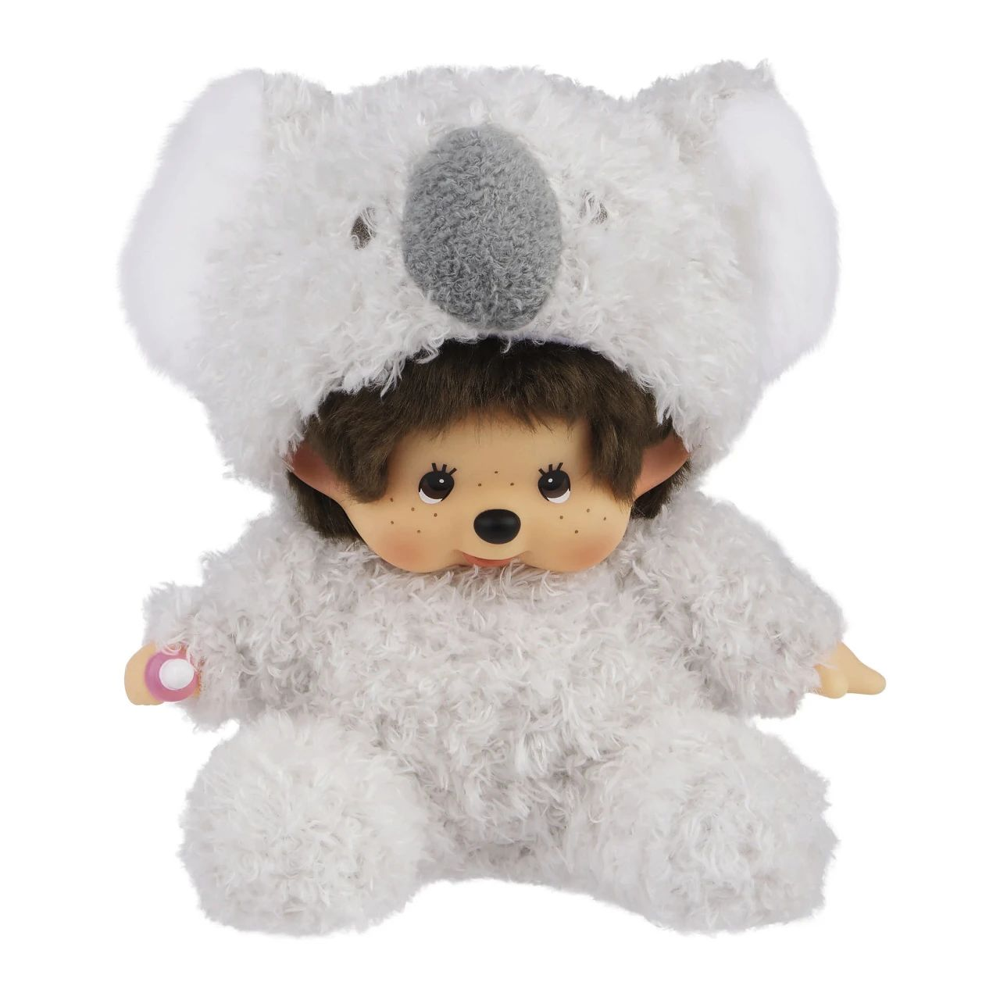
如今有多凉
作为活跃在千禧年之后的初代目潮玩，蒙奇奇并没有被开发出金融属性。圈钱联名、限时限量、新品衍生……这些收割钱包的玩法，蒙奇奇都不感兴趣。而随着粉丝逐渐长大变成熟，蒙奇奇也无风无波地迎来了它的退场时间。其中不乏一些抱着蒙奇奇拍婚纱照的纯粹铁粉，感谢它在冥冥之中保护着这段感情。现在还想把正版蒙奇奇找回来的话，只能去怀旧区碰碰运气了。
积木熊——没有人永远流行
当年有多火
这只无嘴无眼的小熊玩偶，早年进入国内时被讹传成了“暴力熊”。它的可动关节灵感源自乐高，主分成了BASIC基础、JELLYBEAN透明、PATTERN图案、ARTIST艺术家联名款四大类，珍稀程度层层递进。这种阶级森严的设定，让它有了全民追捧的可能性。而和潮牌、电影、明星的联名款限定发售后，价格往往能从数千炒到数万。老牌艺术家岳敏君操刀的积木熊拍出过120万天价，相较之下，108万的Labubu已经不算啥了。
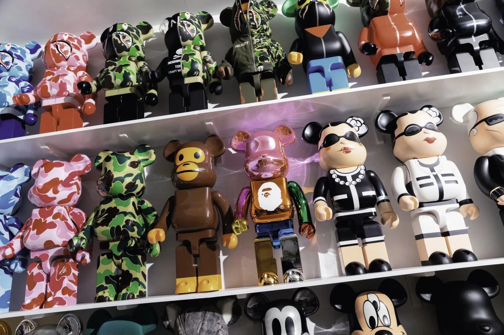
如今有多凉
BE@RBRICK走上了所有现象级盲盒玩具的老路——大量推新后导致用户审美阈值被一再拉升，最终难逃吃灰的命运。随着大量普通版涌入市场，它也成了越印越多的第三方货币，黄牛每天一睁眼就在亏。想当年被顶流明星捧在手里合影的积木熊，如今已经沦为了地摊彩绘的常客。搬个小马扎往那一坐，潜心给石膏娃娃涂脂抹粉。再稀缺的限量隐藏版，也赶不上我这全球独一份的One-Off手绘款。
芝麻街——从火到凉，再火再凉
当年有多火
这几只毛茸茸的奇行种，你或许叫不出名字，但看到之后总会有一种难言的熟悉感。那是因为诞生于1969年的《芝麻街》，是一档影响了足足三四代人的科教节目。艾摩、甜饼怪、大鸟等角色玩偶，也在全球范围内火过了半个世纪。它们是真正的初代潮玩，虽然鲜有现象级爆火的高光片刻，但因为战线拉得够长，所以号召力一直在线。你问爷爷要Labubu会被痛斥败家玩意儿，换成Elmo的话就能喜提一副全新嘴脸。
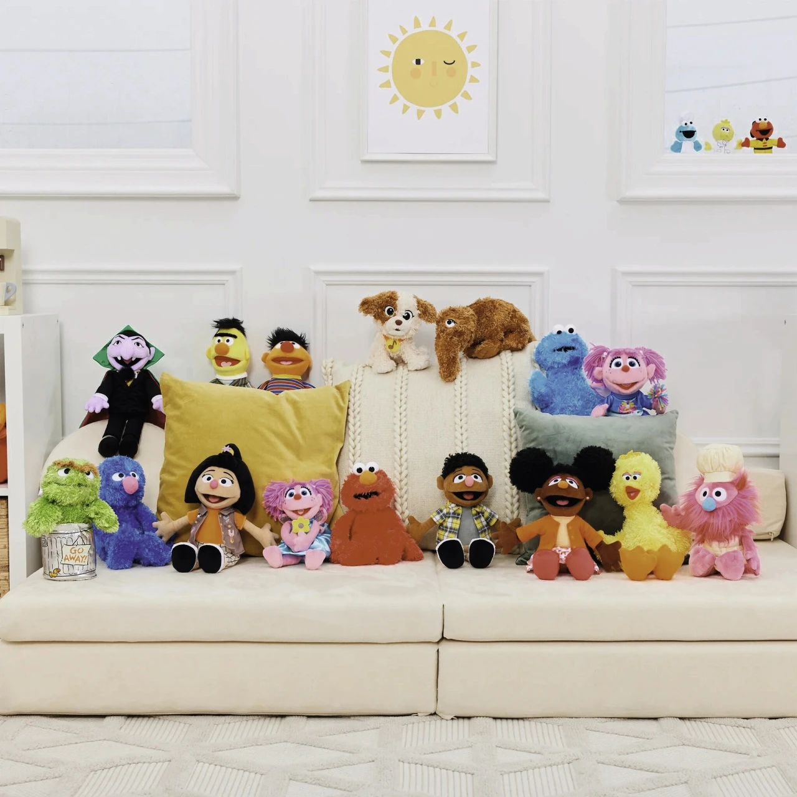
如今有多凉
芝麻街三人众的迷人之处在于，它在那个正版毛绒玩具匮乏的年代，扮演着几代人共同的“阿贝贝”。近些年的二次翻红，本质上就是情怀回溯。芝麻街就像偶尔被提起的老演员，感动会有，但不会太久。这个曾经红极一时的文化符号，终因形象单一而褪去光环。或许用不了多久，它还会再登热搜，勾起人们心底最柔软的回忆。但是被缤纷盲盒惯坏的新一代孩子，显然品不了这口细糠。
太阳花——最忙也最懒的潮牌IP
当年有多火
就像藤原浩深度绑死了那一枚闪电，太阳花的流量同样够村上隆吃上一辈子。它代表着乐观、忠诚和沉默的爱，各种小词儿一招呼，原本呆呆的形象突然就高级了起来。从KAWS、Fragment Design这种当红潮牌，到LV一类的奢圈老炮，村上隆都联名过，其号召力之强可见一斑。衣服、滑板、胸针等周边，更是供不应求。粉丝们挤破头只为拥有一件印着太阳花的T恤，套进脖子的那一刻，你笑得比太阳花还灿烂。
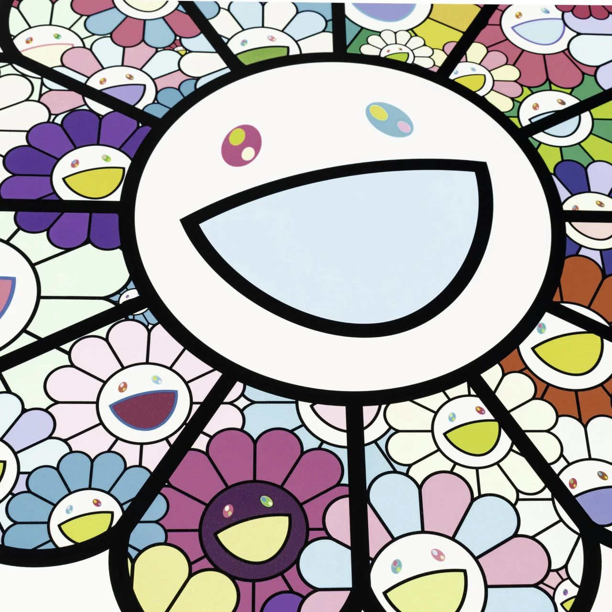
如今有多凉
在走上坡路时，简单纯粹的画风是太阳花坐上火箭的最佳助燃剂。不过在被流量抛弃时，这反而成了它最大的命门。无论怎么联名，它都是千篇一律的灿烂笑脸。能在用料、颜色上整点儿新意，已经是村上隆的极限了。特别是在后期的一些无意义联名中，太阳花几乎成了“潮圈南极人”。一天到晚在跨界合作，但雨露均沾浅尝辄止，形成了“又勤劳又懒散”的魔幻调性。主理人数钱数到手软，粉丝们骂娘骂到口干，也算达成了大和谐。
Tips：下一个Labubu会是谁？
Crybaby
它是泡泡玛特投资人卫哲钦点的“下一个Labubu”，也精准掐住了丑萌这一夹缝审美。其标志性泪滴造型和暗黑萌系设计，精准击中Z世代对“脆弱美学”的精神共鸣。曾带火Labubu的Lisa，现在背包上也挂起了Crybaby。再加上一些情感小故事做铺垫，它明显复刻着Molly和Labubu的走红路线，做好了从潮玩升华为情感载体的准备。
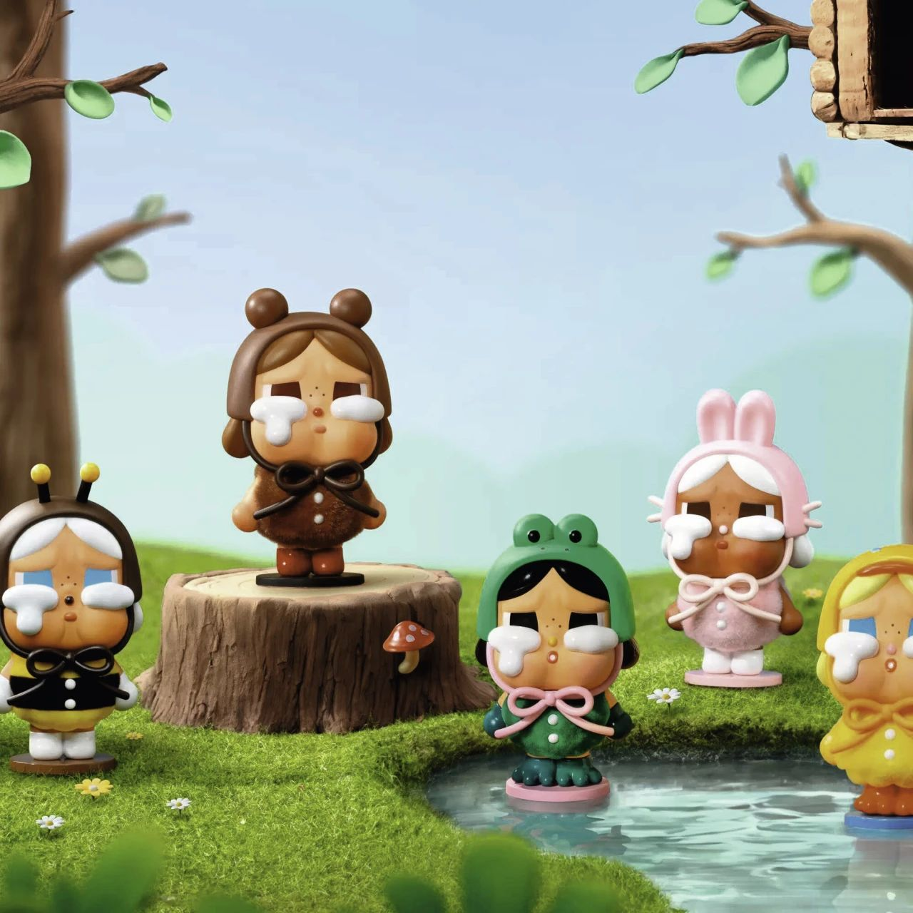
Fugglers
它有一个非常抽象的名字——放克牙宝，标志就是那一口良莠不齐的人类牙齿。这种极混搭的设计语言叠加上崩坏表情，使得Fugglers成了怪萌玩偶赛道的新宠儿。它完全抛弃了丑和萌的平衡感，几乎做到了“九分丑一分萌”。打破传统审美框架的同时，让小众爱好成了一种新式潮流。如果你真爱牙宝的话，带它去看看牙医吧。
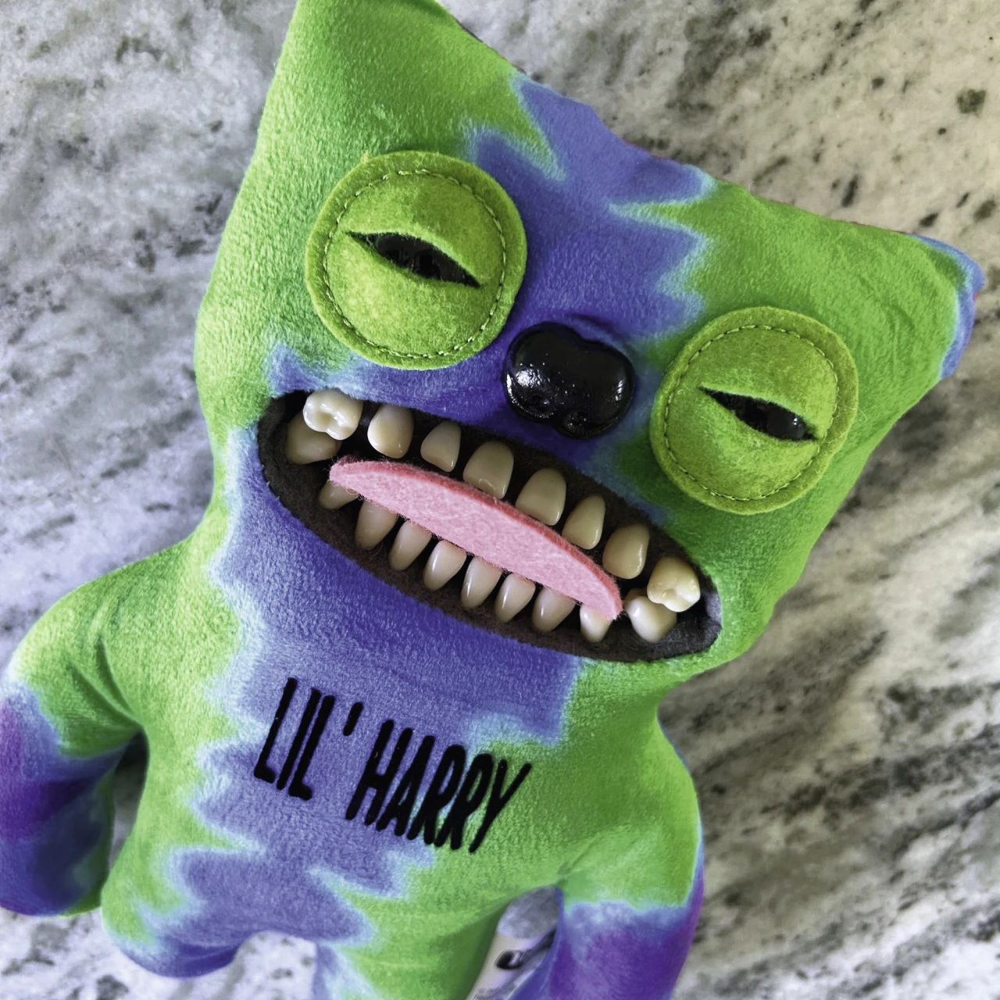
最后分析这类炒作所折射出的商业逻辑，在《“情绪价值”就是非理性》中已经分析过，越是没有实用性的物品越容易被赋予“情绪价值”进行炒作，配合天花乱坠的“忽悠”，就能创造出巨大的金融属性。推销此类产品的“忽悠”技能，难以被工具属性的创新技术所取代。
2025.7.27